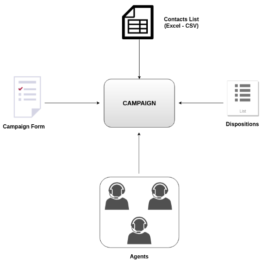
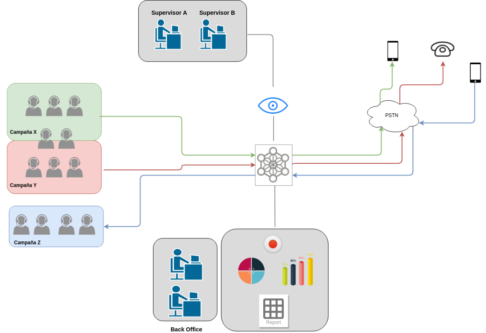
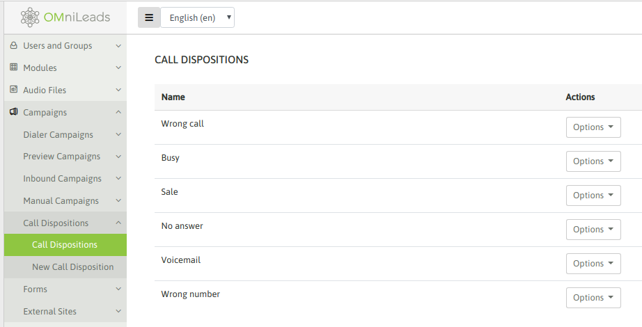
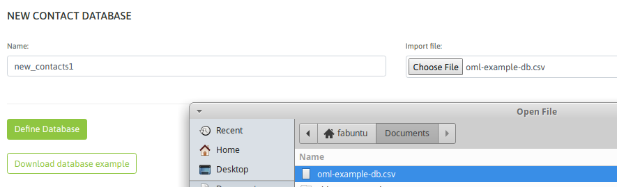
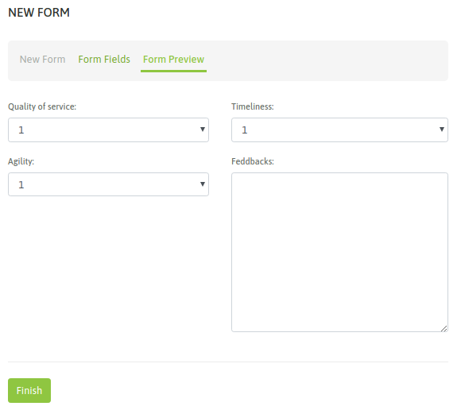

Campañas Telefónicas¶
Una campaña representa una manera de clasificar dentro de la plataforma a una operación de Contact Center que integra:
- Un grupo de agentes procesando llamadas en un sentido (outbound o inbound).
- Una base de contactos asociada a la campaña.
- Un listado de calificaciones que se despliegan a la hora de tipificar la llamada gestionada por el agente.
- Un formulario de campaña, a ser desplegado si el agente asigna la calificación de “gestión” sobre la llamada en curso. El formulario es desplegado por dicha calificación y el agente puede completar el mismo según los datos del contacto en curso.
En la figura 1, se ilustra todo lo citado en los ítems.
Figure 1: the campaigns elements
El hecho de trabajar bajo campañas, permite a los perfiles de usuarios Supervisor/Administrador extraer información y métricas de cada campañas, así como también realizar monitoreo en tiempo real o buscar grabaciones, entre otras acciones, usando como criterio de filtrado a las campañas. Podemos contar con diferentes campañas de diferente naturaleza (predictivas, preview, entrantes o manuales), conviviendo de manera simultánea en OMniLeads y dejando registros sobre las llamadas transaccionadas por los agentes.
Figure 2: Campaigns, agents, supervisors and backoffice
Calificaciones¶
Las calificaciones constituyen un listado de etiquetas disponibles para ser vinculadas a cualquier campaña, de manera tal que luego las llamadas procesadas dentro de una campaña pueda ofrecer dichas calificaciones al agente afectado a una llamada de manera tal que éste ultimo pueda cerrar (temporal o definitivamente) la gestión de la llamada utilizando una de las calificaciones disponibles en la campaña como etiqueta para tipiicar la gestión.
Las calificaciones las define el supervisor o administrador y se pueden relacionar a varios aspectos, por ejemplo:
- El estado del contacto (respondió, no atendió, numero equivocado, etc.)
- El resultado de la gestión (interesado, no interesado, se ofreció producto, se vendió, etc.)
- La predisposición del contactado o el resultado de una encuesta de satisfacción (cliente conforme, enojado, etc.)
Las calificaciones pueden ser totalmente arbitrarias y para generarlas se debe ingresar al punto de menú; Campaigns → Call Dispositions → New Call Dispositions.
Podemos listar las calificaciones generadas dentro de Campaigns → Call Dispositions → Call Dispositions
Figure 3: Call dispositions
Base de contactos¶
Las bases de datos son utilizadas tanto para las campañas entrantes como salientes. En las campañas salientes, los datos que requiere el discador predictivo/preview se extraen de la base de contactos afectada a la campaña, mientras que en las campañas entrantes aportan los datos que se despliegan en la pantalla del agente cada vez que ingresa al sistema alguna comunicación
Deben estar almacenadas en archivos con formato CSV con los campos separados con coma y además generadas en la codificacipón UTF8. Además, es requisito que el primer campo se llame explícitamente “telefono” almacenando a su vez el teléfono principal del contacto, el resto de las columnas puede contener diferentes valores arbitrarios y complementarios al teléfono principal. Estas columnas adicionales, serán desplegadas en la pantalla del agente cuando se establezca la comunicación con un cliente cuyo registro se encuentre dentro de la base de contactos de la campaña.

Figure 4: Contacts CSV file
Disponiendo entonces de una base de contactos, se puede proceder con la carga del archivo en el sistema accediendo al punto de menú; Contacts → New contacts database
Figure 5: New contact database
Formularios¶
Los formularios de campaña constituyen un elemento que permite recolectar información de la llamada. Son diseñados dentro de OMniLeads conjugando en una vista estática diferentes tipos campos (texto, fecha, de multiple selección y área de texto).
Para crear formularios se debe acceder al punto de menú; Campaigns → New form. Allí
Figure 6: New capaign form
Interacción con un CRM externo¶
Esta funcionalidad permite lanzar una petición “get” con datos del contacto y la llamada desde OMniLeads hacia un CRM basado en tecnología web (requisito), permitiendo así que cada agente del call center disponga automáticamente de una vista del CRM asociada a los datos del contacto asociado a la comunicación actual.
En cada llamada al CRM se pueden enviar datos de la llamada y el contacto como por ejemplo:
- El path a la grabación de la llamada
- El “id” del agente
- El “id” de la campaña
- Cualquiera de las columnas de la base asociada a la campaña
Entre otros parámetros.
Campañas Manuales¶
Dentro de este insiso se ejemplifica el paso a paso de una creación
Campañas Preview¶
En el siguiente video se expone paso a paso la creación y puesta en marcha de una campaña preview. Además se ejemplifica la operación del agente dentro de la misma.
Para profundizar en el asunto ingresar al link, donde se explica cada pantalla de configuración detalladamente.
Campañas con discador predictivo¶
Campañas Entrantes¶
En este capítulo se repasan todas las funcionalidades asociadas al tratamiento de llamadas entrantes.
En el siguiente video se expone paso a paso la creación y puesta en marcha de una campaña entrante.
En este siguiente video se ejemplifica cómo configurar un PBX basado en Asterisk para derivar llamadas hacia campañas entrantes de OMniLeads, desde un IVR del PBX. Aunque la configuración expuesta también permite derivar llamadas desde cualquier elemento del PBX, incluyendo las llamadas generadas o transferidas desde extensiones del PBX con destino en alguna campaña de OMniLeads.
Para profundizar en cada una de las funcionalidaes pertinentes al mundo de las llamadas entrantes, se recomienda ingresar a cada uno de los links expuestos debajo.
Plantillas de Campaña¶
En muchas ocasiones los parámetros de una familia de campañas (por ejemeplo campañas preview de encuestas) no varían demasiado salvo por quizás por ejemplo el grupo de agentes asignados, la base de contactos a utilizar o el supervisor agignado. Entonces en lugar de tener que crear campañas myu similares siempre de cero, se pueden utilizar las plantillas y clonar éstas con los parámetros listos para avanzar más rápidamente en la creación de la nueva campaña.
Esta funcionalidad la otorgan los Templates de campañas de OMniLeads.
A partir de generar un template (que se genera como una campaña), se pasa a disponer del mismo, de manera tal que simplemente seleccionando el template y la opción Create campaign from template se genera una nueva campaña con todos los parámetros especificados en el template como configurados en la nueva campaña.

Figure 6: templates